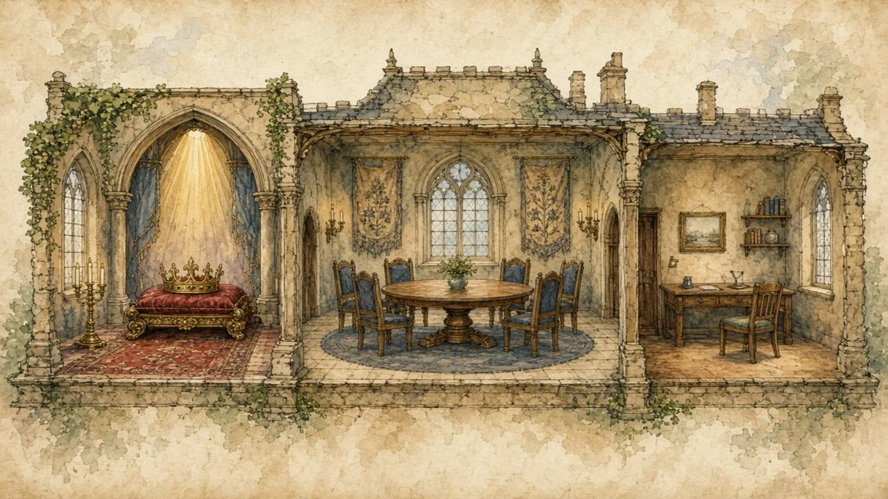

A king or queen does not always rule. A president is not always powerful. Who really holds power depends on the system.
Systems of government · Lesson 1 of 8
🌍 Politics map · ← Politics Around the World · 🌱 Easier version (A2) · Prime Minister or President? →

Each new word is hidden in a sentence. Read it aloud and say what you think the bold word means from the rest of the sentence — then reveal it and see how close you were.
Read each part. After it, there's a quick comprehension check (try the questions from memory first), then one thing to discuss.
In the United Kingdom, Japan, Canada, Spain and Norway, a monarch is the head of state, but elected politicians run the government. These countries are called constitutional monarchies, because a constitution — written or unwritten — limits what the monarch can do. In the UK, for example, the monarch opens parliament and formally approves new laws, but by long custom does so on the advice of ministers.
1. What is a constitutional monarchy?
2. Name two countries that are constitutional monarchies.
1. A country with a monarch whose powers are limited by a constitution, while elected politicians govern.
2. For example the UK, Japan, Canada, Spain or Norway.
Many republics also separate two jobs. In Germany, Italy and India, the president is largely ceremonial, while a prime minister or chancellor holds the real power. In the USA and Brazil, the president does both jobs: head of state and head of the government. So a title such as “president” can describe very different amounts of power.
1. In which countries is the president mostly ceremonial?
2. Name a country where the president also runs the government.
1. In parliamentary republics such as Germany, Italy and India.
2. For example the USA or Brazil.
A few monarchs still hold real political power. Saudi Arabia, Brunei and Eswatini are often described as absolute monarchies. At the same time, some countries that call themselves democratic republics offer little real choice at the ballot box. The label on the door does not tell you who holds the keys, so it is worth asking who can be removed by voters, and who cannot.
1. What is an absolute monarchy?
2. Why is a country's official name not enough to judge it?
1. A system where the monarch holds real political power.
2. Because what matters is who really holds power and whether voters can remove them, not the label.
A stereotype and the reality rarely match. This lesson's grammar gives you the structure to describe the difference.
Complete each sentence about Where Does Power Sit?.
1. A monarch is a person is born into the role.
2. A republic is a country head of state is not a monarch.
3. The parliament building, is beside the river, opens at nine.
1. who (or that)
2. whose
3. which
1. Spain is a country the king has little real political power.
2. Germany, has a ceremonial president, is a parliamentary republic.
3. The 1990s were a decade many countries wrote new constitutions.
1. where
2. which
3. when
Hold on to this — you'll need it in the Speak tab.
The belief that “a king means a ruler” comes from history. For centuries monarchs did rule, and many stories, films and fairy tales still show them deciding everything. Over time, in many countries, power moved step by step to parliaments, while the monarchy stayed as a symbol of continuity. The disagreement today is not about who is right, but about what a head of state is for: to represent the country, or to run it.
This is the heart of the lesson — do all of it out loud. The timer is there to keep you going: fill the time with detail rather than escaping it.
Explain how power is divided in one country with a monarch and one republic, as if to a friend who thinks “king means ruler”. Move through the arc: constitutional monarchy → ceremonial presidents → presidents with real power → absolute monarchy.
Use today's grammar at least three times, and work in at least five key words (monarch, head of state, constitution, ceremonial, republic, elect, parliament, authority).
“Every country should have a president, not a monarch.” Discuss.
Tell a story from your own world — work, family, the news — that connects to this topic. Stuck for an idea? Pick one of these and run with it:
🌍 Politics map · ← Politics Around the World · 🌱 Easier version (A2) · Prime Minister or President? →